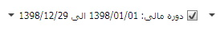
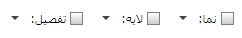

گزارش دریافتی می تواند در یکی از سطح های کل، معین یا جز باشد در این باکس می توانید تعیین کنید که گزارش را در چه سطحی دریافت کنید

در این باکس می توانید دوره مالی مورد نظر خود را تعیین کنید که در این صورت فقط گردش های حساب مربوط به دوره ی مالی تعیین شده قابل نمایش است

در این باکس می توانید بازه ی زمانی مورد نظر خود را تعیین کنید که در این صورت فقط گردش حسابهایی که در بازه ی زمانی تعیین شده قرار می گیرند نمایش داده خواهند شد

اگر برای گزارش بازه ی زمانی تعیین کنید این باکس نیز فعال می شود و مانده ی گردش حساب ها قبل از بازه ی زمانی را در قالب منقول از صفحه ی قبل به گزارش اضافه می کند

در این باکس سه گزینه وجود دارد گزینه ی روزانه ثبت های هر روز را در یک سند می گنجاند، گزینه ی روزانه با جز همانند روزانه عمل می کند با این تفاوت که تفصیل ثبت ها را نیز در گزارش نمایش می دهد، گزینه ی ماهانه برای ثبت های هر ماه یک سند صادر می کند

در تصویر بالا سه فیلتر نما، لایه و تفصیل را مشاهده می کنید با فعال کردن باکس نما می توانید گزارش را بر مبنای نمای تعیین شده دریافت کنید باکس لایه و تفصیل نیز هر یک بر مبنای لایه و تفصیلی که تعیین می کنید بر گزارش دریافتی تاثیر می گذارند

پس از تعیین سطح، دوره ی مالی، بازه ی زمانی و سایر فیلتر های مورد نظر با کلیک بر روی این کلید می توانید گزارش مورد نظر خود را دریافت کنید

 کلیک کنید تا حساب های انتخاب شده
به کادر شماره ی دو منتقل شوند، در آخر روی
کلیک کنید تا حساب های انتخاب شده
به کادر شماره ی دو منتقل شوند، در آخر روی
 کلیک کنید تا گزارش را دریافت کنید
کلیک کنید تا گزارش را دریافت کنید